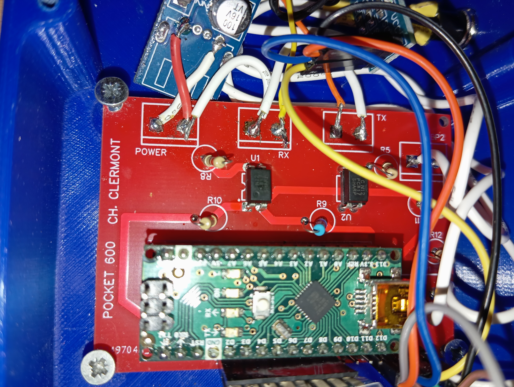
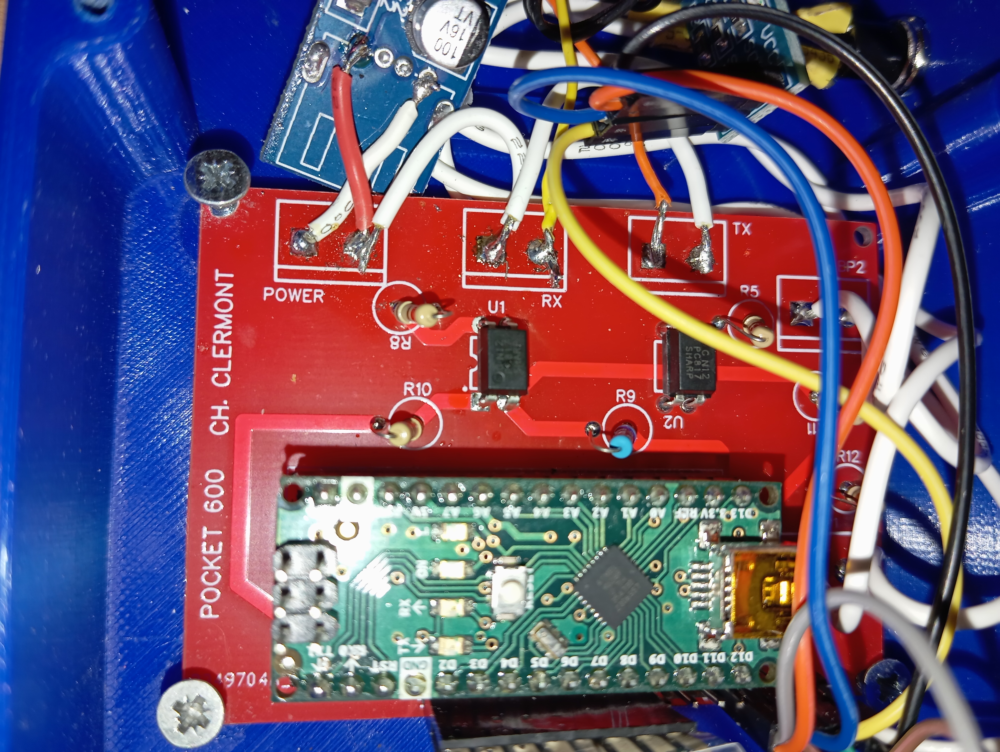

Une station de diagnostic dans la paume de la main. Née du terrain, pensée pour l’efficacité.
La Pocket Diagnostic Automate est un outil DIY conçu pour interagir directement avec les automates SMC600. Basée sur un Arduino Nano Every et un écran LCD I2C, elle permet de poser un diagnostic précis, rapide et sans matériel lourd, même au cœur d’un environnement industriel contraint.
Les outils constructeur, souvent limités, obsolètes ou introuvables, ne suffisent plus à répondre aux exigences de la maintenance moderne. Cette pocket est née de ce constat. Son format réduit et sa simplicité d’utilisation en font une alliée idéale pour les interventions en conditions réelles, sans PC, sans logiciel externe, sans dépendance.
Derrière sa simplicité se cache une vraie puissance. L’outil propose treize fonctions, allant de l’autodiagnostic des bits de défauts jusqu’à la lecture des mots mémoire et à la modification d’horodatages. Elle peut lire, tester, écrire et analyser en temps réel, sur tous les racks et pour différents types de cartes (entrées, sorties, coupleurs...)
Sa capacité à travailler à 19200 bauds en boucle de courant, avec une latence mesurée à seulement 5 ms, la rend parfaitement compatible avec les installations SMC600 existantes.
Imprimée en 3D dans un boîtier PLA compact, la pocket a été conçue pour durer. Le câblage est propre, sécurisé, et documenté sur demande. Elle s’alimente directement via l’unité centrale de l’automate, sans batterie ni alimentation externe. L’interface utilisateur, réduite à l’essentiel, permet une prise en main quasi instantanée : une navigation par menu, quelques boutons, et le tour est joué.
 

Testée et validée en situation réelle, la pocket est aujourd’hui utilisée comme outil d’appoint ou de vérification rapide. Elle n’a pas vocation à remplacer les systèmes avancés… mais force est de constater qu’elle les dépasse souvent en réactivité, en simplicité, et surtout en disponibilité.
Le programme est écrit en C++ via l’Arduino IDE. Il peut être mis à jour via USB et modifié selon les besoins spécifiques des utilisateurs. Plusieurs évolutions sont déjà en cours de test, notamment pour élargir la compatibilité vers d’autres gammes d’automates ou intégrer une mémoire de logs locale.
Elle s’adresse aux techniciens de maintenance, automaticiens ou formateurs souhaitant disposer d’un outil fiable, accessible et pédagogique. Aucune connaissance approfondie n’est requise pour l’utiliser. Une notice d’utilisation est disponible sur simple demande.
La Pocket Diagnostic Automate est l’illustration d’un savoir-faire pragmatique : identifier un besoin, créer une solution fonctionnelle, la faire évoluer, et surtout la partager. Elle représente un petit outil, avec une grande portée.
« Ce genre de projet me rappelle pourquoi j’aime l’automatisme : bricoler utile, comprendre en profondeur, et rendre accessible ce qui ne l’était plus. »